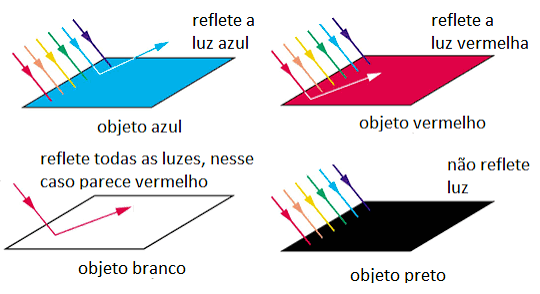
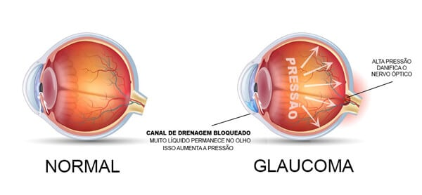

📷
Câmeras
Utilizam lentes para formar imagens reais sobre um sensor fotossensível.
Descubra a ciência por trás das cores, das imagens, do olho humano, da reflexão, da fibra óptica e da tecnologia do esporte.
Projeto Integrador IFA • Física e TecnologiaA formação de imagens é o processo pelo qual a luz, ao interagir com objetos e meios ópticos, organiza-se para criar uma representação visual daquilo que nos cerca.
Sempre que você olha para uma fotografia, assiste a um filme, utiliza um projetor ou observa um objeto através de uma lente, está testemunhando princípios da óptica geométrica.

Utilizam lentes para formar imagens reais sobre um sensor fotossensível.
Utilizam sistemas ópticos para ampliar e projetar imagens sobre uma superfície.
Produzem imagens virtuais ampliadas quando o objeto está dentro da distância focal.
Imagens Reais: são formadas pelo cruzamento efetivo dos raios de luz. Podem ser projetadas sobre uma tela.
Imagens Virtuais: surgem do prolongamento aparente dos raios luminosos. Não podem ser projetadas diretamente sobre uma tela.
A posição das imagens formadas por lentes delgadas e espelhos esféricos pode ser determinada pela relação:
Onde f representa a distância focal, p representa a distância do objeto e p' representa a distância da imagem.
A luz visível é uma pequena parte do espectro eletromagnético. As diferentes frequências percebidas pelo sistema visual humano estão associadas às diferentes cores.
A síntese aditiva é baseada na combinação de fontes luminosas. Seus componentes fundamentais são vermelho, verde e azul, formando o sistema RGB.
Um dos componentes fundamentais do sistema RGB.
Componente luminoso essencial para telas digitais.
Completa o sistema RGB utilizado em dispositivos.
A síntese subtrativa ocorre principalmente com pigmentos. O sistema CMYK utiliza ciano, magenta, amarelo e preto.

O caminho que a luz faz para voltar.
A reflexão acontece quando a luz atinge uma superfície e retorna ao meio de origem.
A principal relação da reflexão especular é:
O ângulo de incidência é igual ao ângulo de reflexão, considerando os ângulos medidos em relação à reta normal.
| Tipo | Características | Exemplo |
|---|---|---|
| Plano | Imagem virtual, direita e de mesmo tamanho. | Espelhos domésticos. |
| Côncavo | Pode formar imagens reais ou virtuais, dependendo da posição do objeto. | Espelhos odontológicos. |
| Convexo | Produz imagem virtual, direita e reduzida. | Retrovisores e vigilância. |
.jpeg)
Mantém o tamanho real do objeto.
Pode convergir raios luminosos.
Expande o campo de visão.
A câmera fotográfica natural do corpo humano.
O olho humano é um sistema óptico complexo responsável pela formação e interpretação de imagens.

| Condição | Formação da imagem | Correção |
|---|---|---|
| Miopia | Antes da retina. | Lente divergente. |
| Hipermetropia | Depois da retina. | Lente convergente. |
| Astigmatismo | Focos diferentes. | Lentes apropriadas. |
| Presbiopia | Dificuldade de acomodação. | Lentes corretivas. |
O comportamento de uma bola em movimento envolve forças aerodinâmicas, resistência do ar, rotação e interação entre a superfície da bola e o fluido ao redor.
A geometria dos painéis e a textura superficial podem influenciar o escoamento do ar e o comportamento da trajetória.
Quando uma bola gira enquanto se desloca pelo ar, a diferença de velocidades do escoamento ao redor de sua superfície pode produzir uma força lateral conhecida como efeito Magnus.
De forma simplificada, a intensidade do efeito depende da rotação da bola e da velocidade de seu deslocamento, entre outros fatores.
Bolas esportivas modernas podem incorporar sensores e sistemas de monitoramento capazes de registrar dados de movimento.
Informações sobre posição, velocidade e rotação.
Podem registrar grandezas relacionadas ao movimento.
A análise permite estudar o comportamento da bola.
Processos de fabricação que reduzem a presença de costuras podem contribuir para maior uniformidade da superfície.
A Física que permite transmitir informações por meio da luz.
A fibra óptica é uma tecnologia de transmissão de informações que utiliza pulsos de luz para transportar dados através de filamentos muito finos de vidro ou plástico.
Seu funcionamento está diretamente relacionado aos princípios da óptica, especialmente à reflexão interna total da luz.
A reflexão interna total ocorre quando a luz passa de um meio com maior índice de refração para outro com menor índice de refração e atinge a interface com um ângulo suficientemente grande em relação à normal.
Nesse caso, em vez de atravessar a interface e escapar para o segundo meio, a luz é totalmente refletida de volta para o meio de origem.
Dentro da fibra, esse fenômeno permite que o sinal luminoso seja guiado ao longo de grandes distâncias.
O comportamento da luz ao passar de um meio para outro pode ser descrito pela Lei de Snell:
Nessa equação, n₁ e n₂ representam os índices de refração dos dois meios, enquanto θ₁ e θ₂ são os ângulos medidos em relação à normal.
Existe um ângulo específico chamado ângulo crítico. Quando a luz passa do meio de maior índice de refração para o meio de menor índice e o ângulo de incidência é maior que esse valor, ocorre a reflexão interna total.
Essa expressão é válida para n₁ > n₂.
Para que o princípio da reflexão interna total funcione, a fibra óptica possui principalmente duas regiões ópticas: o núcleo e a casca.
É a região central da fibra por onde a luz é transmitida. Possui um índice de refração maior do que o da casca.
É a camada que envolve o núcleo e possui índice de refração menor. Essa diferença ajuda a manter a luz confinada no núcleo.
Em um cabo real existem ainda camadas de proteção que ajudam a proteger a fibra contra impactos, umidade, tração e outros danos.
Imagine um feixe luminoso entrando no núcleo da fibra com uma direção adequada. Ao atingir a interface entre o núcleo e a casca, o feixe encontra uma região com menor índice de refração.
Se o ângulo de incidência for maior que o ângulo crítico, a luz não atravessa a interface. Ela é refletida novamente para o interior do núcleo.
Esse processo acontece sucessivamente, fazendo com que a luz seja conduzida ao longo da fibra.
A transmissão óptica apresenta vantagens importantes em sistemas de comunicação. Os sinais podem transportar grandes quantidades de informação e as fibras são pouco suscetíveis a interferências eletromagnéticas externas.
A tecnologia permite transmitir grandes quantidades de dados por meio de sinais luminosos.
É utilizada em redes de internet, telefonia, televisão e sistemas de comunicação.
A transmissão por luz não sofre os mesmos efeitos de interferência eletromagnética encontrados em muitos cabos metálicos.
| Elemento | Função |
|---|---|
| Luz | Transporta a informação através da fibra. |
| Núcleo | Região central por onde a luz se propaga. |
| Casca | Possui menor índice de refração e auxilia no confinamento da luz. |
| Reflexão interna total | Mantém a luz sendo refletida dentro do núcleo. |
| Lei de Snell | Descreve a relação entre os ângulos e os índices de refração. |
Vídeos dos projetos desenvolvidos durante o projeto.
Nesta seção estão reunidos os vídeos dos projetos de robótica, separados dos conteúdos relacionados à Robótica.
Vídeo relacionado aos projetos de programação.